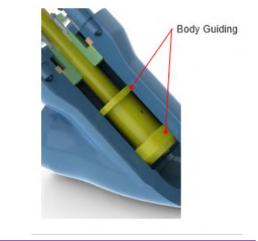
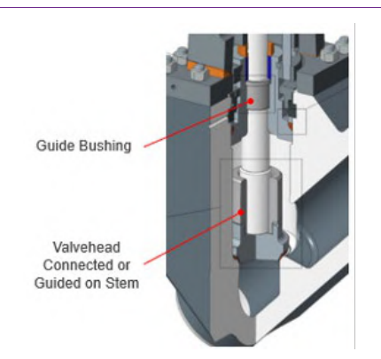

Body Guiding vs. Stem-Bonnet Guiding
Body Guiding

Large contact area gives stability — typical on larger globe and non-return valves; generally needs hard-facing and is subject to binding/fouling if scale isn't controlled
Stem-Bonnet Guiding

Keeps the guiding surface off the process media — needs no hard-facing and keeps valvehead size/weight down, at the cost of a larger stem diameter on big valves
After Control Valve Handbook, 6th ed., Figs. 10.19 & 10.20 — used directly, own printed labels retained (Style Guide Sec 6.3). Component Index: cvh-cmp-body-guiding, cvh-cmp-stem-bonnet-guiding.